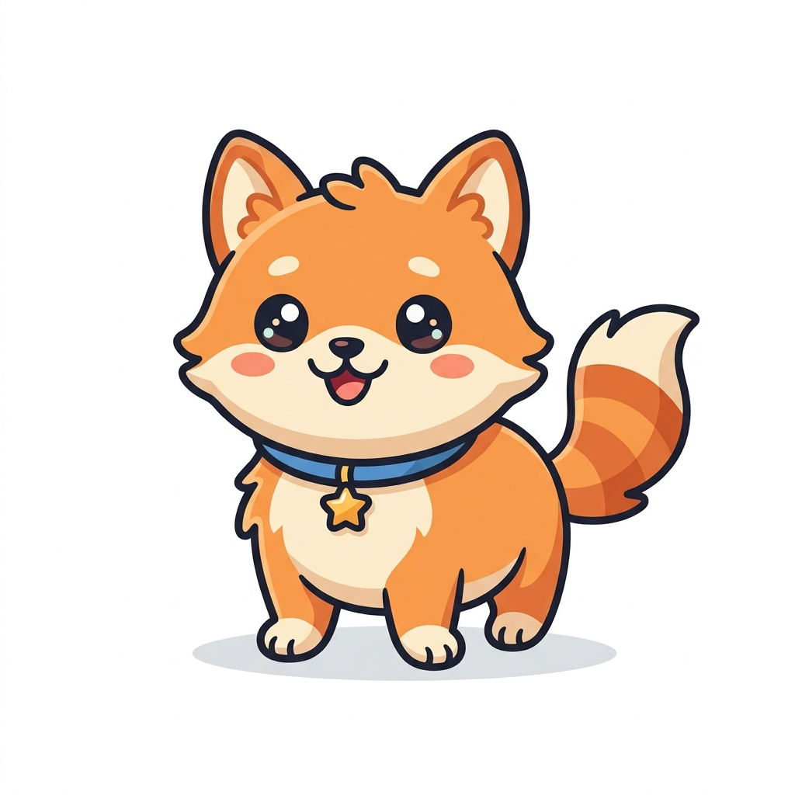

🐾 心情寵物日記
🏠 寵物主頁
📝 記錄日記
📈 情緒圖表
🗺️ 旅程地圖
第 12 組
與你的小寵物
一起成長
每一篇日記，都是牠成長的養分。
紀錄心情，解鎖成就，讓你們的故事繼續。
✍️ 立刻記錄今日心情

嗨！今天心情好嗎？
🌟
小布丁
的成長狀態
✏️
等級
1
⭐
經驗值
20 / 100 XP
💖
親密度
50 / 100
📅
連續記錄天數
0
天
📖
日記總篇數
0
篇
📖 最近的日記
+ 新增日記
還沒有任何日記喔！
快去記錄今天的心情吧 🐾
開始記錄
💬 與
小布丁
聊天
🔑 設定 Groq 金鑰
輸入您的 Groq API Key (僅存在您的瀏覽器本地):
儲存金鑰
嗨！我是你的小寵物，今天想跟我聊點什麼呢？🐾
🐾 傳送